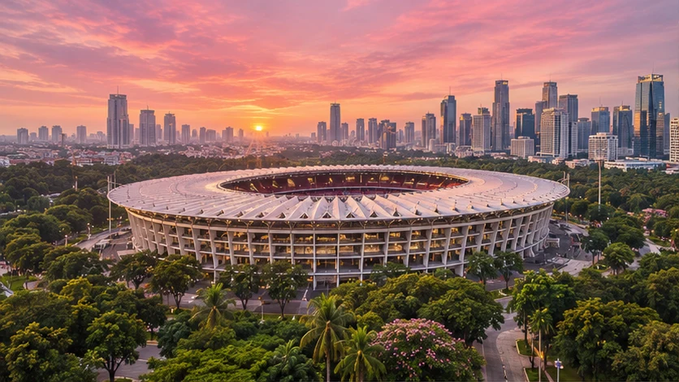

Sepak bola · Atletik

Senayan, Jakarta
Cari tempat olahraga, cek agenda, dan temukan jalan masuk ke Gelora Bung Karno.
Temukan venueStadion Utama Gelora Bung Karno
Pilih aktivitas untuk melihat venue yang relevan.
Sepak bola · Atletik

Olahraga indoor

Renang · Olahraga air
Desember · Agenda contoh
Untuk jadwal aktual, cek pengumuman resmi GBK dan penyelenggara.
Lihat situs resmi GBK ↗Stadion Utama
Stadion Akuatik
Gunakan pin venue sebagai tujuan. Pada hari acara, cek gerbang dan titik drop-off yang ditentukan penyelenggara.